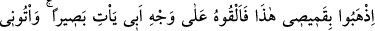
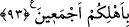

Bu ifade, ayrıca Allah Teâlâ’nın mü’min kullarına ana-babalarından ve merhamet
sahibi herkesten daha çok acıdığına da işaret etmektedir.”
Anlatılır ki ölümle burun buruna gelen bir genç, bir türlü kelime-i şehâdet
getiremiyordu. Bu durum Hz. Peygamber (s.a.)’e bildirildi. Hz. Peygamber (a.s.) gencin
yanına gelince, şehâdet telkîninde bulundu. Gencin dili bir türlü şehâdete varmıyordu.
Bunun üzerine Rasûl-i Ekrem (a.s.) şöyle buyurdu:
“Bu genç namaz kılar, oruç tutar, zekat verir miydi?”
Oradakiler:
“Evet” cevabının verince Hz. Peygamber (a.s.):
“Peki anne-baba haklarına riâyetsizlik eder miydi?” diye sordu.
Bu soruya da “Evet” cevabını verdiler.
Hz. Peygamber (a.s.) annesini getirmelerini emretti. Yaşlı ve tek gözü gören bir kadın
olan annesi gelince, kadına:
“Yavrunu affetsen! Ateşte yanması için mi dokuz ay karnında taşıdın, ateşte yanması
için mi iki sene emzirdin? Nerede annelik merhameti!?” dedi. İşte tam bu sırada gencin
dili çözüldü.[90]
Buradaki nükte şudur: Kadıncağız acıması herkesi kuşatan biri (rahmâne) değil de
sadece merhametli (rahîme) olduğu halde onun o kadarcık acıması oğlunun ateşte
yanmasına razı olmuyorsa, kullarının işlediği günahların zararı kendisine ulaşmayan O
Rahman ve Rahîm Allah yetmiş sene kelime-i şehâdet üzere yaşayan mü’min kullarının
yanmasına nasıl müsâade eder?!
93. “Şu benim gömleğimi götürün, babamın yüzüne koyun da gözü açılsın. Bütün
âilenizle birlikte bana gelin.”
Yûsuf kendisini ağabeylerine tanıtıp onlar da tanıyınca “Benim yokluğumda hâli nice
oldu?” diyerek babasını sordu. Ağabeyleri de: “Babamız gözlerini kaybetti.” diye cevap
verdiler. Bunun üzerine gömleğini onlara verip şöyle dedi: Ey ağabeylerim! “Şu benim
gömleğimi götürün.”
Bu gömlek, tevârüs edilegelen gömlekti. Nitekim Enes b. Mâlik (r.a.)’dan rivâyet
edildiğine göre Rasûlullah (s.a.) şöyle buyurmuştur:
“Şu benim gömleğimi götürün” ifadesinin izâhı şöyledir: Zâlim Nemrûd İbrâhim’i
ateşe attırınca, Allah Cibrîl’i cennetten bir gömlek ve bir halı ile İbrahim’e indirdi.
Cibrîl de bu gömleği İbrahim’e giydirdi, onu halının üzerine oturttu. Kendisi de
onunla birlikte halının üzerine oturdu. İbrahim, bu gömleği İshak’a giydirdi. İshak